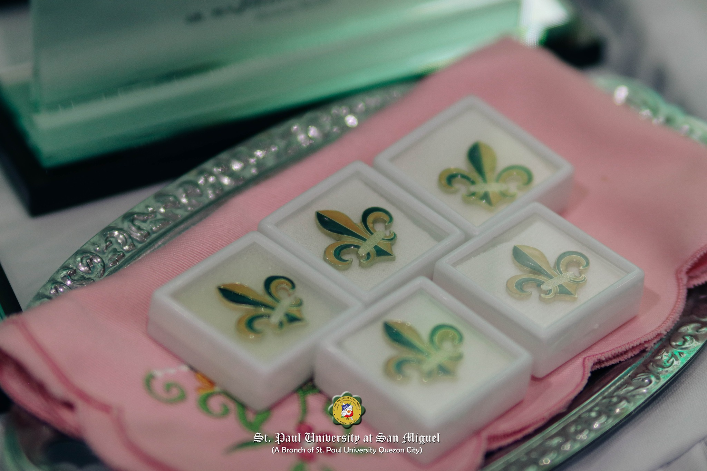

Paulumni is a web-based alumni tracking system designed for St. Paul University at San Miguel. It enhances connectivity and engagement between the university, its alumni, and current students by providing a centralized platform for profile updates, event notifications, and networking opportunities.
To foster lifelong connections by bridging alumni and upcoming graduates with St. Paul University, promoting collaboration, engagement, and community support.
Recognizing Paulinian excellence! Join us in celebrating alumni who have made a remarkable impact in their fields and communities. Click the title to view more details.
A look back at last year's honorees! Celebrating the remarkable achievements of Paulinian alumni who have demonstrated excellence in their professions and made significant contributions to their communities. Click the title to view more details.
Are you a Paulinian Alumni? Register now to stay connected!